(a) Starting pose

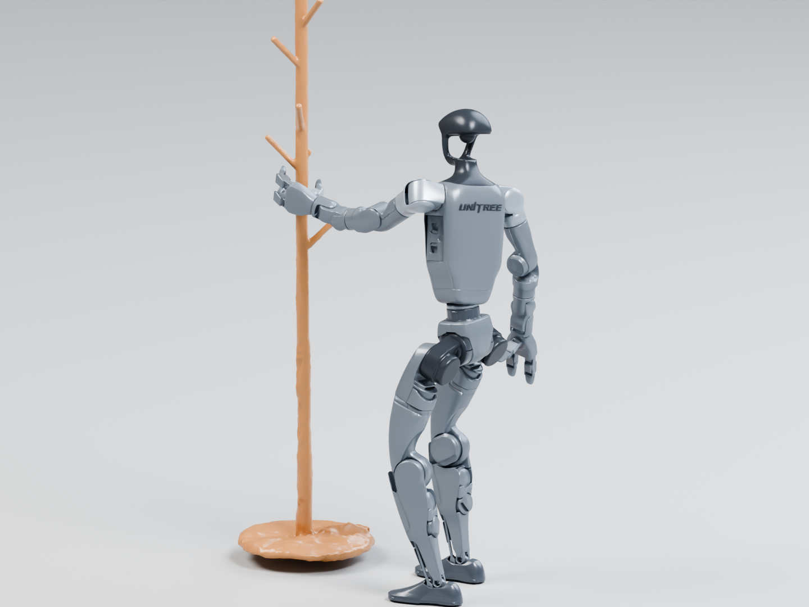
Prepare the clothes-stand lift
The agent corrects foot support and hand clearance before stepping. Root height, leg posture and finger placement change while the object’s initial pose stays fixed.
Motion retargeting translates a human demonstration into a reference motion for a robot. Human and robot bodies differ in their proportions, joint limits and ranges of motion. Existing methods typically match the demonstrated body motion while adapting contact targets to the robot’s geometry.
We posit that retargeting should preserve the semantic intent of the interaction: what the human accomplishes with the object. The robot may need a different posture, grasp or sequence of movements to achieve that intent. In our experiments, we use the demonstrated object trajectory, scaled for G1, as the interaction target. Object-tracking error measures how closely the robot reproduces the desired object motion, while its own motion and contact strategy remain free to change.
Retargeted references can serve as training data for downstream whole-body control policies, as studied in GMR’s analysis of retargeting and motion tracking. These policies learn to track the reference while maintaining balance and responding to physical forces. The quality of the reference therefore matters for the interactions a policy can learn.
HOI-Retarget treats contact as part of the retargeting problem. It maps human motion and object-relative contact targets onto the humanoid, in our case Unitree G1, then optimizes the robot motion to preserve them. The result specifies how the robot and object should move. Carry and place a chair (Fig. 1) shows the intended interaction in a kinematic replay, without advancing physics.
A geometric objective still has to reconcile body pose, joint limits and contact targets on a different embodiment. These constraints can compete. In Push and pull a box (Fig. 2), the resulting body and hand configuration does not preserve a useful contact with the box. A reference can therefore require revision even before we ask a controller to execute it.
A kinematic reference describes the intended motion, but executing it requires the robot to balance, establish contact and support the object's weight. SPIDER addresses this gap through sampling-based optimization in physics simulation. We combine it with HOI-Retarget to evaluate whether the retargeted motions can be executed by G1 with Dex3 hands.
Physics-based optimization can improve execution, but complex interactions may require a different grasp, posture or sequence of movements. In the clothes-stand example below, HOI-Retarget + SPIDER loses balance and tips the stand. HuMoTAR refines the motion and controller to lift, transport and place the same object.
We posit that accurate and generalizable retargeting requires foundational priors that capture both the semantic intent and physical requirements of a motion. The robot should accomplish what the human does to the object, while adapting its own posture, contact strategy and timing. In our experiments, the demonstration supplies an object trajectory scaled for G1. That target stays fixed; the robot’s motion and controller can change.
HuMoTAR uses an agentic harness to make these revisions through simulation feedback. An off-the-shelf model writes motion and control code, tests the interaction, and revises its solution from the observed execution. We study this process across HUMOTO and OMOMO, then examine when reports from related skills help a new interaction.
We study three ways to use the same off-the-shelf model, GPT-6 Astra, for retargeting. Each receives the human-motion reference, the task scene and the robot interfaces. The distinction is how it proposes a solution and uses feedback.
Astra one-shot produces a motion and controller in one response. Codex works in a persistent coding session, executing and revising its solution. The Orchestrator-agent ensemble, our harness, runs four independent Codex agents within a 30-minute refinement budget and retains the valid final execution with the lowest mean ADD. Two agents also receive optional retargeting tools for contact, geometry and tracking analysis. All four explore their own solutions without exchanging intermediate results.
Executions combine the generated manipulation controller with SONIC for whole-body tracking in MuJoCo.
Agents can write their own analysis and control code. Two ensemble agents also receive a supplied retargeting-tools file, which they may use, modify or replace. These helpers expose the following measurements and interfaces; they do not prescribe a grasp or a refinement sequence.
Table 1. Interfaces available during refinement.
| Tool or interface | What it provides |
|---|---|
| Contact inspection | Contact locations, normals and forces from a saved execution, with close-up views. |
| Geometry checks | Contact gaps, surface alignment, penetration and joint-limit margins for a proposed pose. |
| Motion diagnostics | Link-position and orientation errors, and reference, command and execution joint traces. |
| Object-path evaluation | Mean ADD, position and orientation errors against the fixed target trajectory. |
| Whole-body control | A frozen tracking policy driven by a motion reference. |
| Custom joint control | Targets, gains and feedforward torques for the agent’s manipulation controller. |
We begin with a human demonstration and an initial G1 motion from HOI-Retarget. The scaled object trajectory defines the interaction goal, while the robot's motion and controller remain open to refinement. Figure 5 shows how Astra turns this starting reference into a program that can be executed, inspected and revised in simulation.
Astra writes executable Python code. The code can construct wrist trajectories, solve inverse kinematics for arm and waist joints, adjust finger targets, and change the duration of individual motion phases. Across the recorded runs, agents also implement joint-impedance control, object-pose feedback and contact-dependent transitions; some try constrained inverse dynamics to compute joint torques. These strategies are implemented in the generated program, together with any revised reference trajectories and initialization.
Physical execution requires whole-body control to support the robot and hand control to manipulate the object. We use SONIC as a frozen whole-body policy, tracking a motion reference at 50 Hz. Its 29 body joints include the arms and wrists, but not the Dex3 fingers. To control the interaction, Astra writes a custom hand and arm controller in Python. This controller commands the fingers and, when needed, replaces SONIC’s arm commands with targets, gains and feedforward torques suited to the task.
The agent can also revise the motion reference supplied to SONIC so that whole-body control follows the intended arm motion. During each rollout, SONIC and the custom hand and arm controller produce the joint commands. Astra inspects the resulting execution and revises the code or reference before the next trial.
MuJoCo executes the combined joint commands and records the resulting robot and object motion. Astra can inspect rendered views, tracking errors, contact locations and forces, joint limits and collision clearances. It uses this feedback to revise the next candidate, then tests the complete interaction again. The retained result includes the executed reference motion and the controller needed to replay it. The examples in Figure 5 show the kinds of changes made within this loop.
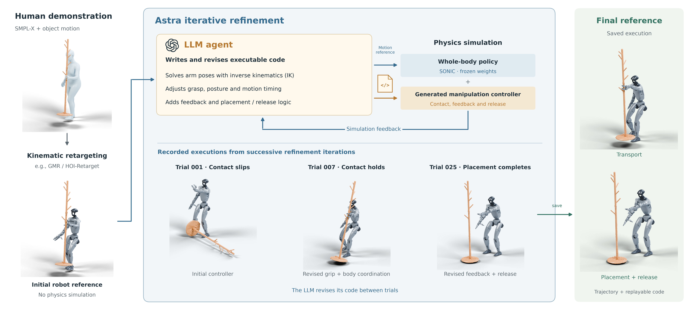

The agent corrects foot support and hand clearance before stepping. Root height, leg posture and finger placement change while the object’s initial pose stays fixed.
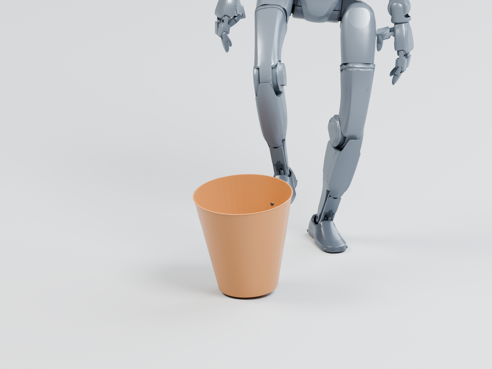
Foot placement and leg motion establish contact near the rim to tilt the bin. The other foot provides support while the right foot directs the interaction.
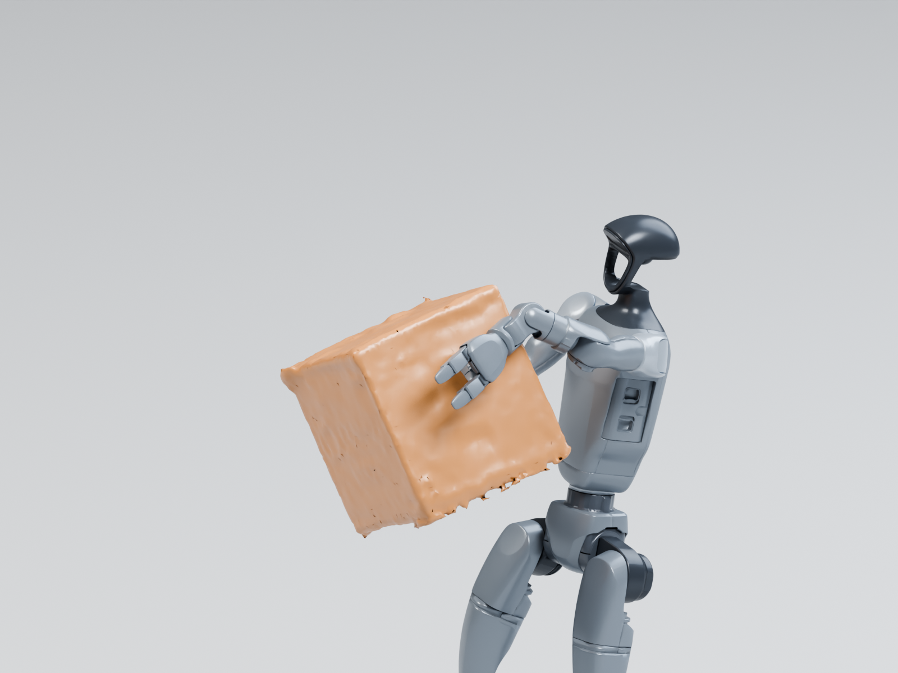
Both hands support the raised box through object-relative arm targets. The controller maintains the grip as the load transfers from the floor to the arms.
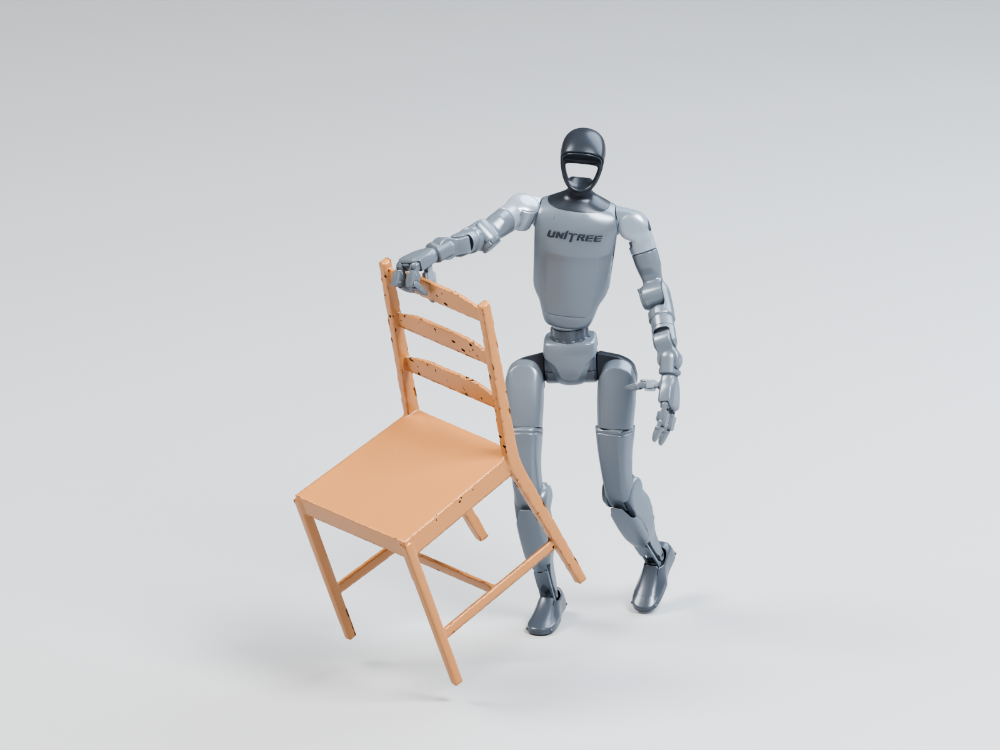
Pelvis-position feedback steers the whole-body reference while arm IK follows the backrest rail. The body advances with the chair while the hand maintains its grasp.
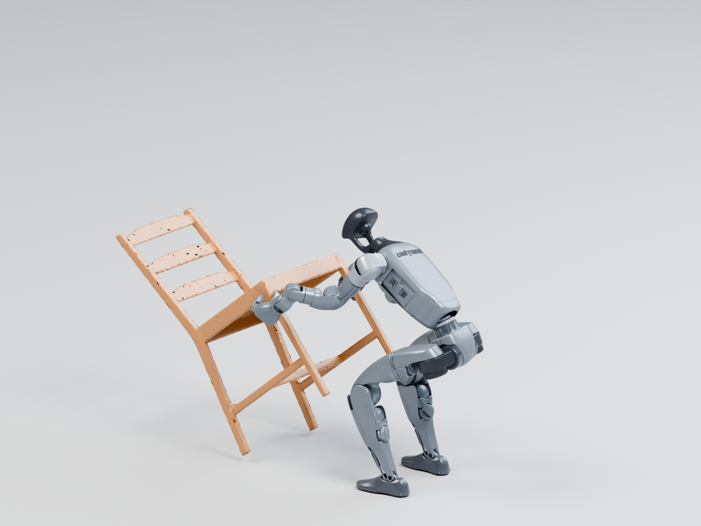
The agent slows the rocking phase and uses object-pose feedback to follow the tilt. Hand opening is staggered as the chair returns upright.
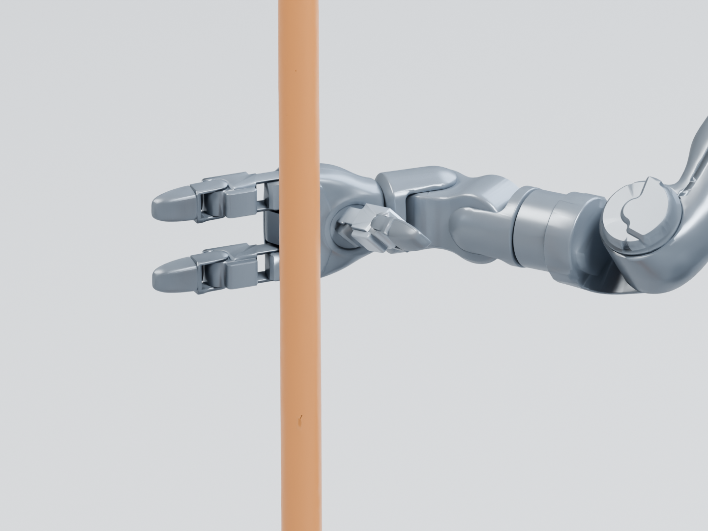
The agent adjusts the base orientation and waits for the lamp to settle before opening the fingers. The hand then withdraws while the floor supports the lamp.
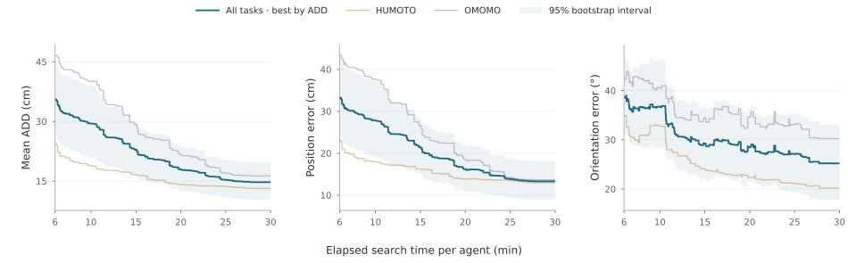
A kinematic reference specifies the intended motion, but execution can produce large errors when contact fails or the robot cannot support the load. Figure 6 follows the performance of the iterative refinement process over a 30-minute budget. Each step reflects a new best execution as the agent revises the motion or controller. The dark curve averages across all tasks; the lighter curves show HUMOTO and OMOMO separately. The larger drops indicate substantial improvements, followed by smaller corrections as refinement progresses.
Mean ADD selects the best execution at each point; position and orientation report that same execution. The curves begin when all tasks have a scored execution; the unrefined kinematic replay was not recorded consistently enough to mark a shared starting value.
Here we follow the agent selected by our orchestrator harness through a complete refinement of the clothes-stand interaction from Figure 5. In this OMOMO task, the robot must lift the stand, carry it through a turn and place it on the floor. Five saved revisions trace how the agent resolves a slipping grasp, brings the body into the motion and completes release.
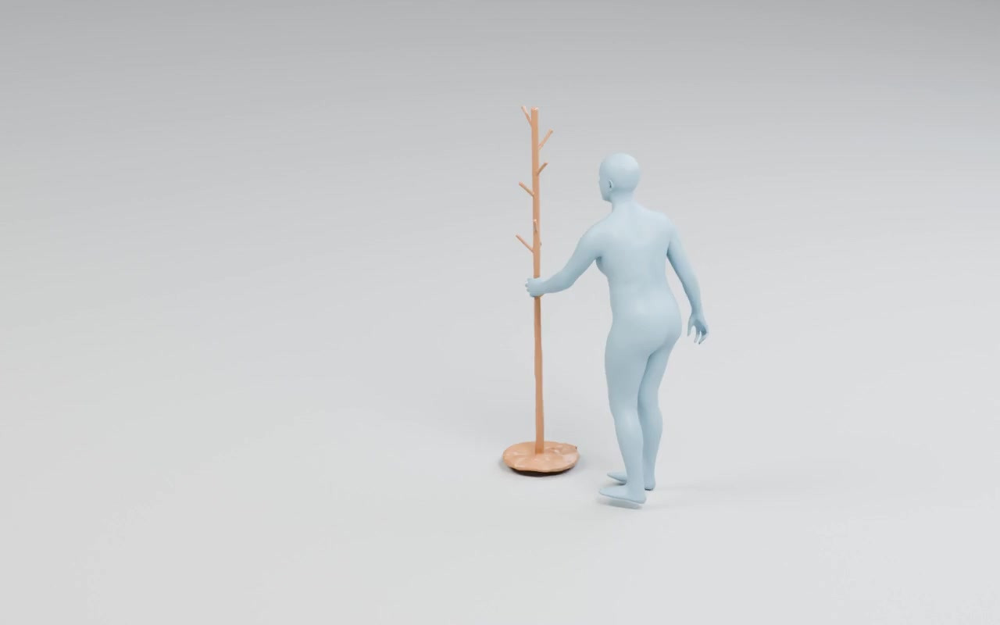
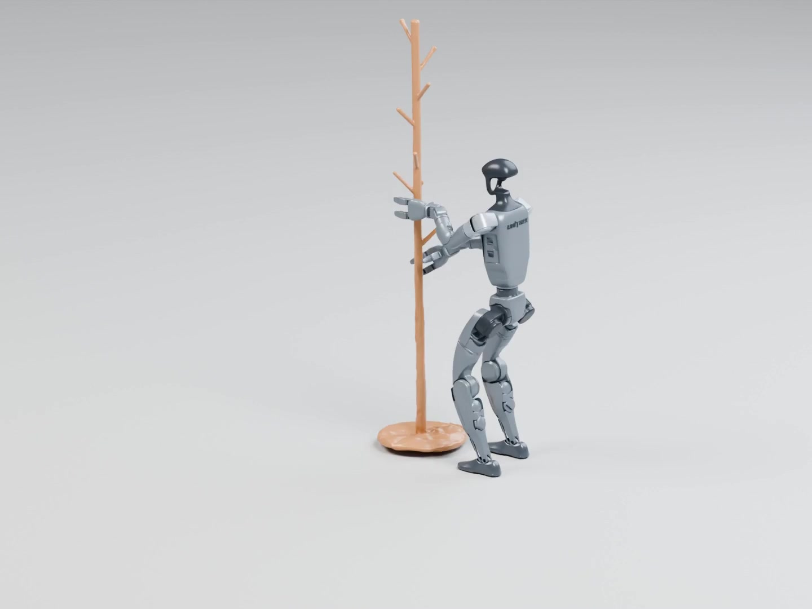
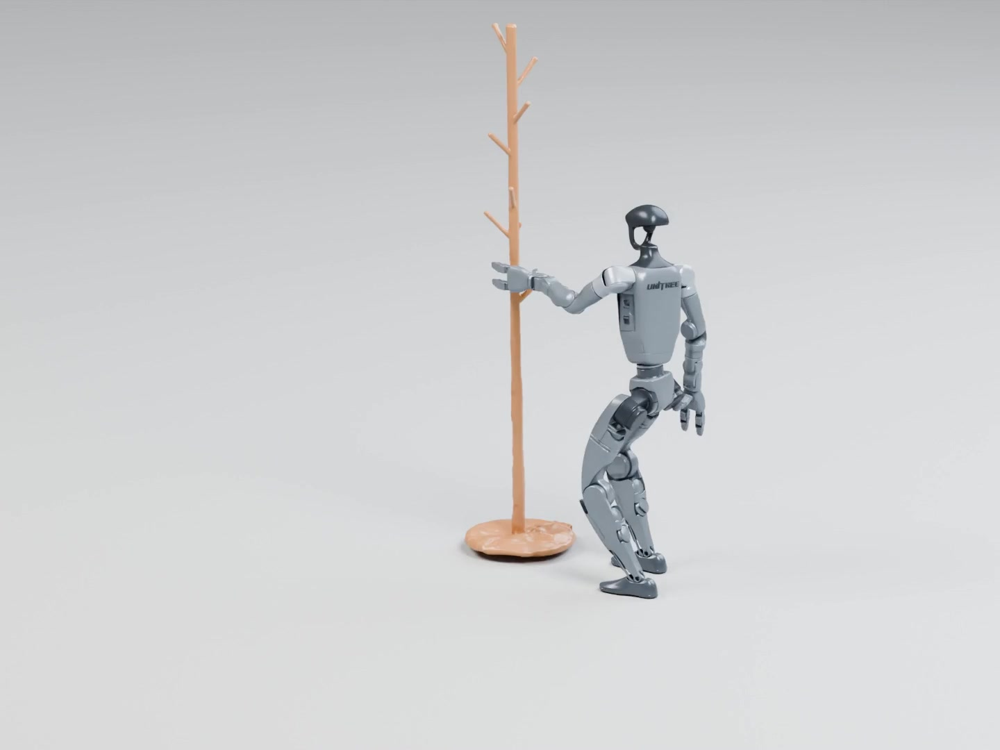
Fig. 7. Five revisions of the OMOMO clothes-stand task by HuMoTAR’s selected agent. Videos show the simulated motions; agent excerpts describe the changes between trials. The highlighted curve point identifies the displayed revision and its mean ADD.
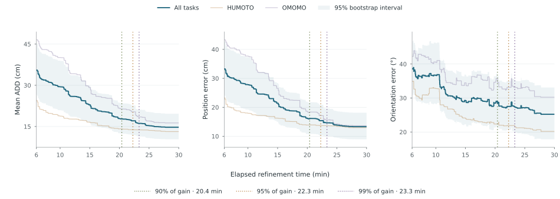
Early stopping limits the time spent on iterative refinement while retaining the best reference motion output obtained so far. Here, the stopping condition is elapsed refinement time: at a chosen cutoff, we retain the reference motion output and its controller from the refinement stage with the lowest measured mean ADD for each task. We evaluate this condition retrospectively using the recorded executions and token usage from the full 30-minute runs.
Figure 8 marks the average time each task takes to reach 90%, 95% and 99% of its recorded ADD reduction. The 95% milestone averages 22.3 minutes, which motivates a 22.3-minute early-stopping cutoff. Stopping every task at that time retains 88.4% of the improvement on average, because individual tasks reach their milestones at different times.
We compare HOI-Retarget + SPIDER, Astra one-shot, Codex and the Orchestrator-agent ensemble on 20 HUMOTO tasks and 20 OMOMO tasks. Each dataset uses the same task list across all four methods. We report the saved final execution from each run and average equally across tasks.
Codex refines the motion with one agent. The ensemble runs four independent agents, two with optional access to the provided retargeting tools, and selects the final reference by mean ADD. Refinement is evaluated over a 30-minute budget. HOI-Retarget + SPIDER uses the frozen humanoid-object optimization configuration with G1 and Dex3. SPIDER runs at its native 60 Hz integration rate; the agent-generated controllers use the harness’s 500 Hz simulation. Both are scored against the same object targets.
We compare the object’s pose in the dynamic humanoid–object interaction rollout with the human-reference object trajectory scaled for G1. The reference trajectory stays fixed during refinement, and the object’s size is unchanged. We compare poses along the two object paths in the order they occur, allowing the robot to move at a different speed or pause. Both paths are sampled by progress through translation and rotation, rather than elapsed time.
All three metrics use the same trajectory alignment. We compute each task’s score first, then average equally across tasks; lower is better.
| Method | Tasks | Mean ADD (cm) | Position error (cm) | Orientation error (°) |
|---|---|---|---|---|
| HUMOTO · 20 tasks | ||||
| HOI-Retarget + SPIDER | 20 | 56.66 | 55.49 | 51.22 |
| Astra one-shot | 20 | 56.09 | 55.03 | 62.88 |
| Codex | 20 | 20.96 | 19.19 | 29.32 |
| Orchestrator-agent ensemble (ours) | 20 | 14.30 | 13.87 | 22.07 |
| OMOMO · 20 tasks | ||||
| HOI-Retarget + SPIDER | 20 | 48.31 | 43.36 | 52.07 |
| Astra one-shot | 20 | 69.87 | 65.61 | 58.35 |
| Codex | 20 | 26.51 | 23.70 | 28.32 |
| Orchestrator-agent ensemble (ours) | 20 | 19.61 | 17.06 | 27.07 |
We investigate whether experience from related interactions helps a robot retarget a new task. Here, G1 must raise a shelf from lying on its side to standing upright. The experience consists of reports from four other furniture tasks, including carrying a table and lifting a chair. These reports summarize the strategies tested and their outcomes.
We first run four agents for 15 minutes, two with optional access to the provided retargeting tools, and select the best valid shelf motion. From this checkpoint, we run two separate 15-minute continuations: one receives the reports, and the other continues without them. Both use the same model, tools and starting solution, with 30 minutes of total refinement. This comparison measures the benefit of the supplied experience under an equal refinement budget.
We posit that retargeting should be evaluated by the successful transfer of an interaction’s semantic intent. In this study, object tracking provides a measurable objective for preserving the intended object motion. It is possible, however, for executions with similar tracking errors to differ in how fully they accomplish the task. User studies could complement these measurements by assessing whether the intended interaction is preserved. LLM-based judges could also supply semantic feedback during refinement and evaluation. We encourage the community to explore these directions and assess their agreement with human judgments.
Humanoid references can serve as training data for downstream whole-body policies. Our results demonstrate the promise of agentic refinement using off-the-shelf models and low-level controllers, without training a new policy for each interaction. Reinforcement-learning fine-tuning could build on these references to improve robustness to disturbances and variation in the task scene. Downstream policy training and deployment remain to be evaluated. We hope this work encourages the community to investigate agentic methods as a source of reference motions for learning interactive humanoid systems.
Our approach still struggles with thin objects and difficult contact geometries. In the plate example, the robot lifts the plate but does not complete the human’s swirling motion. Across the recorded attempts, agents revise finger placement and try two-handed support, yet the grasp remains unreliable during rotation. We observe that contact strategies must account for the robot’s hand morphology. The Dex3 fingers must establish opposing contacts around a thin, sloped rim, which appears to contribute to the difficulty of this task. Motion and controller refinement do not yet resolve this limitation.
We compare GMR, HOI-Retarget and the Orchestrator-agent ensemble on the same task set.
We follow HOI-Retarget’s evaluation protocol (Appendix A): body pose deviation, link velocity direction error, contact-point gap and relative hand-orientation change measure how well the robot preserves the human motion and object-relative contacts. We also report body jerk as a smoothness measure, the mean magnitude of the third time derivative of the palm, ankle, head and pelvis positions, estimated by finite differences. Lower values indicate smoother motion.
| Method | Tasks | Body pose deviation (°) | Velocity direction error (°) | Contact-point gap (mm) | Hand orientation change (°) | Body jerk (m/s³) |
|---|---|---|---|---|---|---|
| HUMOTO · 20 tasks | ||||||
| GMR | 20 | 14.68 | 20.41 | 64.72 | 7.38 | 83.40 |
| HOI-Retarget | 20 | 15.18 | 28.08 | 36.58 | 7.41 | 25.93 |
| Orchestrator-agent ensemble (ours) | 20 | 8.98 | 10.65 | 4.27 | 0.23 | 9.18 |
| OMOMO · 20 tasks | ||||||
| GMR | 20 | 17.42 | 21.53 | 136.63 | 1.50 | 77.63 |
| HOI-Retarget | 20 | 18.94 | 26.10 | 31.31 | 4.93 | 34.68 |
| Orchestrator-agent ensemble (ours) | 20 | 8.56 | 11.07 | 3.53 | 0.20 | 9.99 |
HUMOTO: contact gap uses 16 tasks; hand orientation uses 16. Each metric uses the same applicable tasks across all three methods.
Narayanan Palghat Parameswaran, Jay Karhade, Haoyang He, Neehar Peri, Jay Patrikar, Dong-Ki Kim, Shayegan Omidshafiei, Sebastian Scherer, Deva Ramanan. HuMoTAR: Semantic Humanoid Retargeting with Foundational Priors. 2026.
@misc{parameswaran2026humotar,
title = {HuMoTAR: Semantic Humanoid Retargeting with Foundational Priors},
author = {Palghat Parameswaran, Narayanan and Karhade, Jay and He, Haoyang
and Peri, Neehar and Patrikar, Jay and Kim, Dong-Ki
and Omidshafiei, Shayegan and Scherer, Sebastian and Ramanan, Deva},
year = {2026},
howpublished = {Project blog},
url = {https://narayananpp.github.io/semantic-humanoid-retargeting-blog/}
}